1. Clustering summary#
Part of the Fig. 1 chapter — see it for the panel-by-panel map. The first code cell sets ENTEX_ROOT and activates the no-overwrite guard (see the Reproduction guide). Outputs shown are the author’s original run.
# === Reproduction setup — edit ENTEX_ROOT / REF_ROOT for your machine ===
import os, sys
ENTEX_ROOT = os.environ.get('ENTEX_ROOT', '/large_storage/zhoulab/zhoujt/project/ENTEx')
REF_ROOT = os.environ.get('REF_ROOT', '/large_storage/zhoulab/ref')
BOOK_ROOT = os.environ.get('BOOK_ROOT', f'{ENTEX_ROOT}/analysis/HumanCellEpigenomeAtlas')
sys.path.insert(0, BOOK_ROOT)
os.chdir(f'{ENTEX_ROOT}/analysis') # original working directory
import repro_guard # no-overwrite guard (default: skip existing)
from glob import glob
import anndata
import matplotlib as mpl
import matplotlib.pyplot as plt
import numpy as np
import pandas as pd
import scanpy as sc
import scanpy.external as sce
import seaborn as sns
from ALLCools.clustering import *
from ALLCools.integration.seurat_class import SeuratIntegration
from ALLCools.plot import *
from sklearn.metrics import pairwise_distances, roc_auc_score
from sklearn.preprocessing import normalize
import warnings
warnings.filterwarnings("ignore")
mpl.style.use("default")
mpl.rcParams["pdf.fonttype"] = 42
mpl.rcParams["ps.fonttype"] = 42
mpl.rcParams["font.family"] = "sans-serif"
mpl.rcParams["font.sans-serif"] = "Helvetica"
indir = f'{ENTEX_ROOT}/'
outdir = f'{indir}clustering/merged/'
L1_meta = pd.read_csv(f'{indir}L1color.tsv', sep='\t', header=0, index_col=0)
L1_meta = L1_meta.drop(['c35','c36'], axis=0)
L1_color = L1_meta['color'].to_dict()
L1_annot = L1_meta['L1_abbr'].to_dict()
tissue_meta = pd.read_csv(f'{indir}tissuecolor.tsv', sep='\t', header=0, index_col=0)
tissue_color = tissue_meta['color'].to_dict()
tissue_annot = tissue_meta['tissue_annot'].to_dict()
Example in Fig1#
leg = pd.Index(['c0', 'c1'])
cooldir = f'{indir}loop/majortype/'
gene_meta = pd.read_csv(f'{REF_ROOT}/hg38/gencode/v30/gencode.v30.annotation.gene.flat.tsv.gz', sep='\t', header=0)
gene_meta['gene_id_idx'] = gene_meta['gene_id'].str.split('.').str[0]
gtmp = 'CD3D'
lslop, rslop = 1500000, 1500000
chrom, start, end, strand = gene_meta.loc[gene_meta['gene_name']==gtmp, ['chrom', 'start', 'end', 'strand']].iloc[0]
if strand=='+':
tss = start
else:
tss = end
ll, rr = (tss - lslop), (tss + rslop)
print(chrom, ll, rr)
chr11 116842744 119842744
resl = 10000
loopl, loopr = (ll//resl), (rr//resl)
print(loopl, loopr)
11684 11984
## Load cell type Q
import cooler
from scipy import ndimage as nd
dstall = []
for ct in leg:
cool = cooler.Cooler(f'{cooldir}{ct}/{ct}.Q.cool')
Q = cool.matrix(balance=False, sparse=True).fetch(chrom).tocsr()
tmp = Q[loopl:loopr, loopl:loopr].toarray()
tmp = nd.rotate(tmp, 45, order=0, reshape=True, prefilter=False, cval=0)
dstall.append(tmp)
print(ct)
c0
c1
fig, axes = plt.subplots(1, len(leg), figsize=(3*len(leg), 3), sharex='all', sharey='all', dpi=300)
## differential feature position at 10k resolution
# tmpl = loopall.loc[selloop, [1,4]] // resl - loopl
# tmpl = tmpl.loc[(tmpl[1]>0) & (tmpl[4]<(loopr-loopl))].values
for i in range(len(leg)):
ax = axes[i]
# ax.axis('equal')
ax.set_title(leg.map(L1_annot)[i])
img = ax.imshow(dstall[i], cmap='afmhot_r', vmin=0, vmax=0.012, interpolation='none')
## plot diff loop
# ax.scatter(tmpl[:, 0], tmpl[:, 1], alpha=1, s=10, marker='o', edgecolors='none', color='c', rasterized=True)
ax.set_xlim([0, loopr-loopl])
ax.set_ylim([loopr-loopl, 0])
step = (loopr-loopl)//4
ticks = np.arange(0, loopr-loopl+1, step)
ticklabels = [f'{np.around(xx*resl/1e6, decimals=1)}M' for xx in np.arange(loopl, loopr+1, step)]
ax.set_xticks(ticks)
ax.set_xticklabels(ticklabels, fontsize=10)
ax.set_yticks(ticks)
ax.set_yticklabels(ticklabels, fontsize=10, rotation=90)
# fig.tight_layout()
# fig.savefig(f'{outdir}diffloop_{gtmp}.pdf', transparent=True, dpi=300)
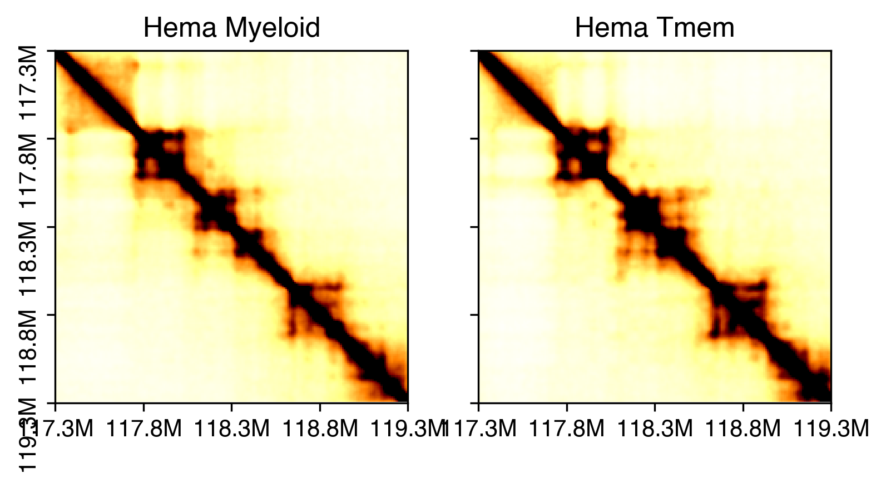
import pysam
from scipy.sparse import csr_matrix
loopl * resl
116840000
def load_allc(ct, chrom, start, end):
global indir
allc_path = f'{indir}merged_allc/L1/CGN/{ct}.CGN-Merge.allc.tsv.gz'
# allc_path = f'{indir}merged_allc/L1/CHN/{ct}.allc.tsv.gz'
idx, data_mc, data_cov = [], [], []
with pysam.TabixFile(allc_path) as allc:
allc_lines = allc.fetch(chrom, start+1, end)
for line in allc_lines:
_, pos, _, context, mc, cov, *_ = line.split("\t")
# if context[1] in 'GN':
# continue
pos, mc, cov = int(pos), int(mc), int(cov)
idx.append(pos-start-1)
data_mc.append(mc)
data_cov.append(cov)
return np.array([idx, data_mc, data_cov])
start = loopl * resl
end = loopr * resl
data_mc_row, data_mc_col, data_mc_data = [], [], []
data_cov_row, data_cov_col, data_cov_data = [], [], []
for i,ct in enumerate(leg):
idx, tmp_mc, tmp_cov = load_allc(ct, chrom, start, end)
posfilter = np.ones(len(idx)).astype(bool)
# for bed in rm_list:
# for xx,yy in bed[chrom]:
# posfilter[np.logical_and(idx>=xx, idx<=yy)] = False
# print(np.sum(posfilter)/len(posfilter))
# idx = idx[posfilter]
# tmp_mc = tmp_mc[posfilter]
# tmp_cov = tmp_cov[posfilter]
data_mc_row.extend(np.zeros(len(idx))+i)
data_mc_col.extend(idx)
data_mc_data.extend(tmp_mc)
data_cov_row.extend(np.zeros(len(idx))+i)
data_cov_col.extend(idx)
data_cov_data.extend(tmp_cov)
print(ct)
data_mc_cg = csr_matrix((data_mc_data, (data_mc_row, data_mc_col)), shape=[len(leg), end-start])
data_cov_cg = csr_matrix((data_cov_data, (data_cov_row, data_cov_col)), shape=[len(leg), end-start])
c0
c1
def load_allc(ct, chrom, start, end):
global indir
# allc_path = f'{indir}merged_allc/L1/CGN/{ct}.CGN-Merge.allc.tsv.gz'
allc_path = f'{indir}merged_allc/L1/CHN/{ct}.allc.tsv.gz'
idx, data_mc, data_cov = [], [], []
with pysam.TabixFile(allc_path) as allc:
allc_lines = allc.fetch(chrom, start+1, end)
for line in allc_lines:
_, pos, _, context, mc, cov, *_ = line.split("\t")
if context[1] in 'GN':
continue
pos, mc, cov = int(pos), int(mc), int(cov)
idx.append(pos-start-1)
data_mc.append(mc)
data_cov.append(cov)
return np.array([idx, data_mc, data_cov])
start = loopl * resl
end = loopr * resl
data_mc_row, data_mc_col, data_mc_data = [], [], []
data_cov_row, data_cov_col, data_cov_data = [], [], []
for i,ct in enumerate(leg):
idx, tmp_mc, tmp_cov = load_allc(ct, chrom, start, end)
posfilter = np.ones(len(idx)).astype(bool)
# for bed in rm_list:
# for xx,yy in bed[chrom]:
# posfilter[np.logical_and(idx>=xx, idx<=yy)] = False
# print(np.sum(posfilter)/len(posfilter))
# idx = idx[posfilter]
# tmp_mc = tmp_mc[posfilter]
# tmp_cov = tmp_cov[posfilter]
data_mc_row.extend(np.zeros(len(idx))+i)
data_mc_col.extend(idx)
data_mc_data.extend(tmp_mc)
data_cov_row.extend(np.zeros(len(idx))+i)
data_cov_col.extend(idx)
data_cov_data.extend(tmp_cov)
print(ct)
data_mc_ch = csr_matrix((data_mc_data, (data_mc_row, data_mc_col)), shape=[len(leg), end-start])
data_cov_ch = csr_matrix((data_cov_data, (data_cov_row, data_cov_col)), shape=[len(leg), end-start])
c0
c1
colors = {'CG':sns.color_palette('Blues',1), 'CH':sns.color_palette('Purples',1)}
resm = 1000
fig, axes = plt.subplots(len(leg)*3, 1, figsize=(8, np.sum(np.repeat([3,1,1],len(leg)).tolist())/2),
gridspec_kw={'height_ratios': np.repeat([3,1,1],len(leg)).tolist()}, dpi=300)
ax.set_xlim([0, (loopr-loopl-1)*np.sqrt(2)])
for i in range(len(leg)):
ax = axes[i]
ax.set_title(leg.map(L1_annot)[i])
ax.spines['right'].set_visible(False)
ax.spines['top'].set_visible(False)
ax.spines['bottom'].set_visible(False)
ax.spines['left'].set_visible(False)
img = ax.imshow(dstall[i], cmap='afmhot_r', vmin=0, vmax=0.015,
interpolation='none', rasterized=True)
h = len(dstall[i])
ax.set_ylim([0.5*h, 0.4*h])
ax.set_xlim([0, h])
ax.set_yticks([])
ax.set_yticklabels([])
# ax.scatter((tmpl[:, 0]+tmpl[:, 1])/np.sqrt(2), 0.5*h-(tmpl[:, 1]-tmpl[:, 0])/np.sqrt(2),
# alpha=0.1, s=10, marker='D', edgecolors='c', color='none')
ax.set_xlim([0, (loopr-loopl-1)*np.sqrt(2)])
ax.set_xticks(np.sqrt(2)*np.array(np.arange(0, loopr-loopl+1, 100).tolist()))
ax.set_xticklabels([])
ax.set_xticklabels([f'{(xx+loopl)/100}M' for xx in np.arange(0, loopr-loopl+1, 100)])
ax = axes[2+i]
mc_tmp = data_mc_cg[i].toarray()[0]
cov_tmp = data_cov_cg[i].toarray()[0]
tmp = mc_tmp.reshape((-1, resm)).sum(axis=1) / cov_tmp.reshape((-1, resm)).sum(axis=1)
x = np.arange(len(tmp))
nbins = tmp.shape[0]
ax.set_xlim([0, nbins])
ax.set_xticks([])
ax.set_ylim([0, 1])
ax.set_yticks([0, 1])
ax.fill_between(x, tmp, 0, where=tmp >= 0, facecolor=colors['CG'], interpolate=True)
ax = axes[4+i]
mc_tmp = data_mc_ch[i].toarray()[0]
cov_tmp = data_cov_ch[i].toarray()[0]
tmp = mc_tmp.reshape((-1, resm)).sum(axis=1) / cov_tmp.reshape((-1, resm)).sum(axis=1)
x = np.arange(len(tmp))
nbins = tmp.shape[0]
ax.set_xlim([0, nbins])
ax.set_xticks([])
ax.set_ylim([0.005, 0.015])
ax.set_yticks([0.005, 0.015])
ax.fill_between(x, tmp, 0, where=tmp >= 0, facecolor=colors['CH'], interpolate=True)
# fig.tight_layout()
fig.savefig('clustering_summary/browser_example.pdf', transparent=True)

Plot all cell tSNE#
def dump_embedding(adata, name, n_dim=2):
# put manifold coordinates into adata.obs
for i in range(n_dim):
adata.obs[f'{name}_{i}'] = adata.obsm[f'X_{name}'][:, i]
return adata
# L1_color = [
# "#dd7f87",
# "#c43f52",
# "#d33d33",
# "#e37a5b",
# "#a44b29",
# "#e0742b",
# "#d99d6c",
# "#91652d",
# "#d9a138",
# "#9f892f",
# "#aeb268",
# "#a9b836",
# "#63711c",
# "#627037",
# "#579232",
# "#65bc3f",
# "#3f8146",
# "#53c067",
# "#6fb685",
# "#46cb97",
# "#2b7f63",
# "#41bfbf",
# "#4aa5d4",
# "#7199df",
# "#5366a9",
# "#657ce4",
# "#695dd8",
# "#b58edb",
# "#7c4fa5",
# "#af5ad1",
# "#e36aca",
# "#cc81b4",
# "#ad398b",
# "#984866",
# "#e04986",
# ]
adata = anndata.read_h5ad(f'{indir}clustering/merged/5kCG100k3C_summary.h5ad')
adata
AnnData object with n_obs × n_vars = 86689 × 0
obs: 'FinalmCReads', 'mCHFrac', 'mCGFrac', 'CisLongContact', 'Cis/Trans', 'Donor', 'Tissue', 'celltype', 'ClusterTissue', 'tsne_0', 'tsne_1', 'leiden_cons', 'leiden_cv', 'leiden_init', 'batch', 'L1_annot', 'L1', 'L2', 'L2_any', 'L2_both', 'L2_mc', 'L2_3c', 'tissue_annot', 'group', 'cluster', 'Short/Long', 'mcg_L2', 'hic_L2', 'L2_final'
obsm: '100k3C_pc50_seuratL2_tsne', '5kCG100k3C_u50pc50_tsne', '5kCG_u50_seuratL2_tsne', 'X_tsne'
selc = np.array([('TrCo_' in xx) and ('_Plate1-' in xx) for xx in adata.obs.index])
adata.obs.loc[selc, 'mCGFrac']
array([False, False, False, ..., False, False, False])
tmp = anndata.read_h5ad(f'{indir}clustering/merged/L1/5kCG100k3C_embed.h5ad')
tmp = tmp[adata.obs.index].copy()
tmp
AnnData object with n_obs × n_vars = 86689 × 0
obs: 'FinalmCReads', 'mCHFrac', 'mCGFrac', 'CisLongContact', 'Cis/Trans', 'Donor', 'Tissue', 'celltype', 'ClusterTissue', 'tsne_0', 'tsne_1', 'leiden_cons', 'leiden_cv', 'L1'
obsm: '5kCG100k3C_u50pc50', '5kCG100k3C_u50pc50_tsne', 'X_tsne'
adata.obsm['5kCG100k3C_u50pc50'] = tmp.obsm['5kCG100k3C_u50pc50']
adata.obsm['5kCG100k3C_u50pc50_tsne'] = tmp.obsm['5kCG100k3C_u50pc50_tsne']
tmp = anndata.read_h5ad(f'{indir}clustering/merged/L1/5kCG_lsi.h5ad')
tmp = tmp[adata.obs.index].copy()
tmp
AnnData object with n_obs × n_vars = 86689 × 0
obs: 'FinalmCReads', 'mCHFrac', 'mCGFrac', 'CisLongContact', 'Cis/Trans', 'Donor', 'Tissue', 'celltype', 'ClusterTissue', 'tsne_0', 'tsne_1'
obsm: '5kCG_lsi', '5kCG_u50_seuratL2', '5kCG_u50_seuratL2_tsne', '5kCG_u50_tsne', 'X_lsi', 'X_tsne'
adata.obsm['5kCG_u50_seuratL2_tsne'] = tmp.obsm['5kCG_u50_seuratL2_tsne']
tmp = anndata.read_h5ad(f'{indir}clustering/merged/L1/100k3C_pca.h5ad')
tmp = tmp[adata.obs.index].copy()
tmp
AnnData object with n_obs × n_vars = 86689 × 0
obs: 'FinalmCReads', 'mCHFrac', 'mCGFrac', 'CisLongContact', 'Cis/Trans', 'Donor', 'Tissue', 'celltype', 'ClusterTissue', 'tsne_0', 'tsne_1'
obsm: '100k3C_pc50_seuratL2', '100k3C_pc50_seuratL2_tsne', '100k3C_pc50_tsne', '100k3C_pca', 'X_pca', 'X_tsne'
adata.obsm['100k3C_pc50_seuratL2_tsne'] = tmp.obsm['100k3C_pc50_seuratL2_tsne']
adata.write_h5ad(f'{indir}clustering/merged/5kCG100k3C_summary.h5ad')
adata
AnnData object with n_obs × n_vars = 86689 × 0
obs: 'FinalmCReads', 'mCHFrac', 'mCGFrac', 'CisLongContact', 'Cis/Trans', 'Donor', 'Tissue', 'celltype', 'ClusterTissue', 'tsne_0', 'tsne_1', 'leiden_cons', 'leiden_cv', 'leiden_init', 'batch', 'L1_annot', 'L1', 'L2', 'L2_any', 'L2_both', 'L2_mc', 'L2_3c', 'tissue_annot', 'group', 'cluster', 'Short/Long'
obsm: '100k3C_pc50_seuratL2_tsne', '5kCG100k3C_u50pc50_tsne', '5kCG_u50_seuratL2_tsne', 'X_tsne'
# L1_meta = adata.obs[['L1','L1_annot']].drop_duplicates().set_index('L1').sort_values('L1_annot')
# L1_meta['color'] = L1_color
# L1_meta.to_csv(f'{indir}L1color.tsv', sep='\t')
# tissue_list = ['AG', 'B', 'EG', 'LG', 'LV', 'RAA', 'PI', 'PBMC', 'P', 'M1C',
# 'SkGcn', 'Sk', 'SB', 'ST', 'NTb', 'TrCo']
# tissue_annot = ['Adrenal Gland',
# 'Breast',
# 'Esophagus',
# 'Lung',
# 'Left Ventricle',
# 'Right Atrium Appendage',
# 'Pancreatic Islet',
# 'Peripheral Blood',
# 'Placenta',
# 'Primary Motor Cortex',
# 'Skeletal Muscle',
# 'Skin',
# 'Small Intestine',
# 'Stomach',
# 'Tibial Nerve',
# 'Transverse Colon'
# ]
# tissue_color = {xx:yy for xx,yy in zip(tissue_annot, sns.color_palette('tab20', len(tissue_annot)).as_hex())}
# tissue_annot = {xx:yy for xx,yy in zip(tissue_list, tissue_annot)}
# tissue_meta = pd.DataFrame(index=tissue_list)
# tissue_meta['tissue_annot'] = tissue_annot
# tissue_meta['color'] = tissue_meta['tissue_annot'].map(tissue_color)
# tissue_meta.index.name = 'tissue'
# tissue_meta.to_csv(f'{indir}tissuecolor.tsv', sep='\t')
L1_meta = pd.read_csv(f'{indir}L1color.tsv', sep='\t', header=0, index_col=0)
L1_color = L1_meta['color'].to_dict()
L1_annot = L1_meta['L1_abbr'].to_dict()
tissue_meta = pd.read_csv(f'{indir}tissuecolor.tsv', sep='\t', header=0, index_col=0)
tissue_color = tissue_meta['color'].to_dict()
tissue_annot = tissue_meta['tissue_annot'].to_dict()
adata.obs['L1_annot'] = adata.obs['L1'].map(L1_annot)
adata.obs['tissue_annot'] = adata.obs['Tissue'].map(tissue_annot)
npc_cg, npc_3c = 50, 50
ds = 0.2
coord_base = 'tsne'
adata.obsm[f'X_{coord_base}'] = adata.obsm[f'5kCG100k3C_u{npc_cg}pc{npc_3c}_{coord_base}'].copy()
dump_embedding(adata, coord_base)
fig, axes = plt.subplots(2, 3, figsize=(15, 8), dpi=300, constrained_layout=True)
tmp = adata.obs.copy()
ax = axes[0, 0]
_ = categorical_scatter(data=tmp,
ax=ax,
coord_base=coord_base,
hue='Donor',
s=ds,
labelsize=8,
max_points=None,
palette='tab20',
scatter_kws={'rasterized':True},
# show_legend=True
)
ax = axes[0, 1]
_ = categorical_scatter(data=tmp,
ax=ax,
coord_base=coord_base,
hue='tissue_annot',
s=ds,
labelsize=8,
max_points=None,
palette=tissue_color,
scatter_kws={'rasterized':True},
# show_legend=True
)
ax = axes[0, 2]
_ = categorical_scatter(data=tmp,
ax=ax,
coord_base=coord_base,
hue='L1_annot',
text_anno='L1_annot',
s=ds,
labelsize=8,
max_points=None,
palette=L1_color,
scatter_kws={'rasterized':True},
# legend_kws={'ncol':1},
# show_legend=True
)
ax = axes[1, 0]
_ = continuous_scatter(ax=ax,
data=tmp,
hue=np.log10(tmp['FinalmCReads']+1),
coord_base=coord_base,
max_points=None,
labelsize=8,
s=ds
)
ax = axes[1, 1]
_ = continuous_scatter(ax=ax,
data=tmp,
hue='mCGFrac',
coord_base=coord_base,
max_points=None,
labelsize=8,
s=ds
)
ax = axes[1, 2]
_ = continuous_scatter(ax=ax,
data=tmp,
hue='mCHFrac',
coord_base=coord_base,
max_points=None,
labelsize=8,
s=ds
)
plt.savefig('clustering_summary/All_5kCG100k3C_meta.pdf', transparent=True)
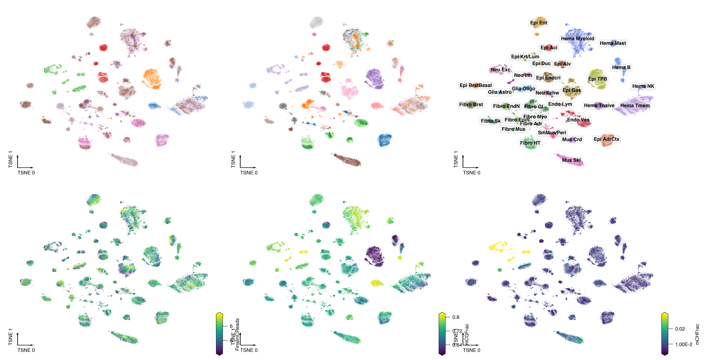
ds = 0.2
coord_base = 'tsne'
fig, axes = plt.subplots(1, 2, figsize=(10, 4), dpi=300, constrained_layout=True)
for xx,ax in zip([f'5kCG_u{npc_cg}', f'100k3C_pc{npc_3c}'], axes):
adata.obsm[f'X_{coord_base}'] = adata.obsm[f'{xx}_seuratL2_{coord_base}'].copy()
dump_embedding(adata, coord_base)
tmp = adata.obs.copy()
# ax = axes[0, 1]
# _ = categorical_scatter(data=tmp,
# ax=ax,
# coord_base=coord_base,
# hue='tissue_annot',
# s=ds,
# labelsize=8,
# max_points=None,
# palette=tissue_color,
# scatter_kws={'rasterized':True},
# # show_legend=True
# )
_ = categorical_scatter(data=tmp,
ax=ax,
coord_base=coord_base,
hue='L1',
text_anno='L1_annot',
s=ds,
labelsize=8,
max_points=None,
palette=L1_color,
scatter_kws={'rasterized':True},
# legend_kws={'ncol':1},
# show_legend=True
)
plt.savefig('clustering_summary/All_modality_cluster.pdf', transparent=True)
ds = 0.2
coord_base = 'tsne'
fig, axes = plt.subplots(1, 2, figsize=(14, 4), dpi=300, constrained_layout=True)
for xx,ax in zip([f'5kCG_u{npc_cg}', f'100k3C_pc{npc_3c}'], axes):
adata.obsm[f'X_{coord_base}'] = adata.obsm[f'{xx}_seuratL2_{coord_base}'].copy()
dump_embedding(adata, coord_base)
tmp = adata.obs.copy()
_ = categorical_scatter(data=tmp,
ax=ax,
coord_base=coord_base,
hue='Tissue',
s=ds,
labelsize=8,
max_points=None,
palette=tissue_color,
scatter_kws={'rasterized':True},
show_legend=True
)
plt.savefig('clustering_summary/All_modality_tissue.pdf', transparent=True)
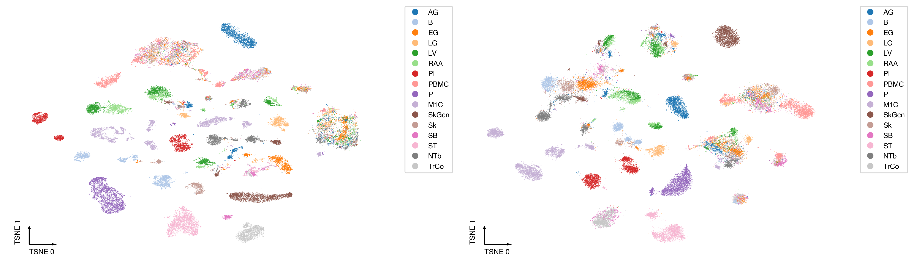
leg = ['Epi AdrCtx', 'Epi Alv', 'Epi BrstBasal', 'Epi Krt/Lum',
'Epi Aci', 'Epi Duc', 'Epi Endcri', 'Epi Ent', 'Epi Gas', 'Epi TPB',
'Mus Crd', 'Mus Skl',
'Glia Astro', 'Glia Oligo', 'Neu Exc', 'Neu Inh', 'Neu Schw',
'Fibro Adr', 'Fibro Brst', 'Fibro EndN', 'Fibro EpiN', 'Fibro GI',
'Fibro HT', 'Fibro Mus', 'Fibro Myo', 'Fibro Sk',
'Hema Mast', 'Hema Myeloid', 'Hema B', 'Hema NK', 'Hema Tmem', 'Hema Tnaive',
'Endo Lym', 'Endo Vsc', 'Perivascular']
count = adata.obs[['Tissue', 'L1_annot']].value_counts().unstack().fillna(0)[leg]
count = count / count.sum(axis=0)
fig, ax = plt.subplots(figsize=(6,2), dpi=300)
idx = np.arange(count.shape[1])
bottom = np.zeros(count.shape[1])
for xx in count.index:
tmp = count.loc[xx]
ax.bar(idx, tmp, width=0.8, bottom=bottom, color=tissue_color[xx])
bottom += tmp
ax.set_xticks(idx)
ax.set_xticklabels(count.columns, rotation=90)
ax.set_xlim([-0.5, count.shape[1]-0.5])
plt.tight_layout()
fig.savefig('clustering_summary/L1_tissueratio.pdf', transparent=True)
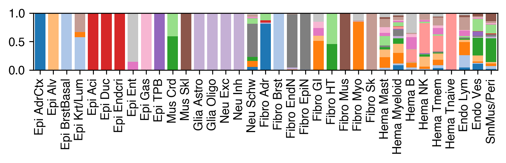
count = adata.obs['Tissue'].value_counts().loc[tissue_meta.index]
fig, ax = plt.subplots(figsize=(1.5, 4), dpi=300)
for i,xx in enumerate(count.index):
ax.scatter(0, i, c=tissue_color[xx], s=40, edgecolor='none')
ax.text(0.5, i, f'{tissue_annot[xx]}\n({count.loc[xx]})', ha='left', va='center', fontsize=6)
ax.set_xlim([-0.5, 5])
ax.set_ylim([15.5, -0.5])
ax.axis('off')
fig.savefig('clustering_summary/tissue_legend.pdf', transparent=True)
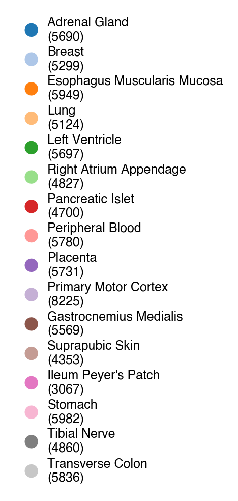
Merge metadata and different level coordinates#
meta = pd.read_csv(f'{outdir}5kCG100k3C_summary.tsv.gz', header=0, index_col=0)
meta
| cluster | subtype | majortype | FinalmCReads | mCHFrac | mCGFrac | CisLongContact | Cis/Trans | Short/Long | Donor | Tissue | |
|---|---|---|---|---|---|---|---|---|---|---|---|
| cell | |||||||||||
| B_IOBHL_Plate10-1-A17-B13 | c17-c0 | c17-b0 | c17 | 1376030 | 0.011876 | 0.727399 | 186626 | 1.318921 | 0.446979 | PT-1LGRB | B |
| B_IOBHL_Plate10-1-A17-B14 | c17-c6 | c17-b1 | c17 | 2734154 | 0.009636 | 0.706403 | 359403 | 1.171003 | -0.255793 | PT-1LGRB | B |
| B_IOBHL_Plate10-1-A17-C2 | c17-c1 | c17-b1 | c17 | 1634700 | 0.012266 | 0.702188 | 206047 | 1.302957 | -0.584638 | PT-1LGRB | B |
| B_IOBHL_Plate10-1-A17-D13 | c17-c0 | c17-b0 | c17 | 2407431 | 0.010201 | 0.698709 | 299610 | 1.023206 | -0.656128 | PT-1LGRB | B |
| B_IOBHL_Plate10-1-A17-D14 | c17-c3 | c17-b0 | c17 | 2644447 | 0.008917 | 0.699867 | 301042 | 0.955355 | -0.216212 | PT-1LGRB | B |
| ... | ... | ... | ... | ... | ... | ... | ... | ... | ... | ... | ... |
| SkGcn_C1PWV_Plate8-6-O14-O12 | c5-c0 | c5-b1 | c5 | 2156069 | 0.010095 | 0.711533 | 217305 | 1.398971 | -0.664927 | PT-1LVAN | SkGcn |
| SkGcn_C1PWV_Plate8-6-O14-O24 | c5-c7 | c5-b0 | c5 | 2452723 | 0.010655 | 0.712112 | 139778 | 1.005821 | -0.570078 | PT-1LVAN | SkGcn |
| SkGcn_C1PWV_Plate8-6-O14-P12 | c5-c4 | c5-b1 | c5 | 3255254 | 0.009585 | 0.701310 | 247522 | 1.286691 | -0.869752 | PT-1LVAN | SkGcn |
| SkGcn_C1PWV_Plate8-6-O14-P23 | c5-c0 | c5-b1 | c5 | 1496482 | 0.017285 | 0.748694 | 56049 | 0.701095 | -0.521453 | PT-1LVAN | SkGcn |
| SkGcn_C1PWV_Plate8-6-O14-P24 | c5-c0 | c5-b1 | c5 | 1402072 | 0.014407 | 0.743782 | 50519 | 0.791462 | -0.708802 | PT-1LVAN | SkGcn |
86689 rows × 11 columns
meta[['L1_joint_tsne_0', 'L1_joint_tsne_1']] = adata.obsm['5kCG100k3C_u50pc50_tsne']
meta[['L1_5kCG_tsne_0', 'L1_5kCG_tsne_1']] = adata.obsm['5kCG_u50_seuratL2_tsne']
meta[['L1_100k3C_tsne_0', 'L1_100k3C_tsne_1']] = adata.obsm['100k3C_pc50_seuratL2_tsne']
for xx in ['L2', 'Tissue']:
for yy in ['joint', '5kCG', '100k3C']:
for i in range(2):
meta[f'{xx}_{yy}_tsne_{i}'] = 0.0
L1_meta = L1_meta.drop(['c35','c36'], axis=0)
key = 'L2'
for ct in L1_meta.index:
ctname = L1_annot[ct].replace(' ','-').replace('/','_')
selc = meta.index[meta['majortype']==ct]
adata = anndata.read_h5ad(f'{outdir}L2/{ctname}/5kCG100k3C_embed.h5ad')[selc]
adata_mc = anndata.read_h5ad(f'{outdir}L2/{ctname}/5kCG_embed.h5ad')[selc]
adata_3c = anndata.read_h5ad(f'{outdir}L2/{ctname}/100k3C_embed.h5ad')[selc]
meta.loc[selc, [f'{key}_joint_tsne_0', f'{key}_joint_tsne_1']] = adata.obsm['X_tsne'].copy()
meta.loc[selc, [f'{key}_5kCG_tsne_0', f'{key}_5kCG_tsne_1']] = adata_mc.obsm['X_tsne'].copy()
meta.loc[selc, [f'{key}_100k3C_tsne_0', f'{key}_100k3C_tsne_1']] = adata_3c.obsm['X_tsne'].copy()
key = 'Tissue'
for t in tissue_meta.index:
selc = meta.index[meta['Tissue']==t]
adata = anndata.read_h5ad(f'{indir}clustering/tissue/L1/{t}/5kCG100k3C_embed.h5ad')[selc]
adata_mc = anndata.read_h5ad(f'{indir}clustering/tissue/L1/{t}/mCG_5kb_lsi.h5ad')[selc]
adata_3c = anndata.read_h5ad(f'{indir}clustering/tissue/L1/{t}/HiC_100kb_pca.h5ad')[selc]
npc_cg = [int(xx.split('_')[1][1:]) for xx in adata_mc.obsm.keys() if '_seuratL2_tsne' in xx][0]
npc_3c = [int(xx.split('_')[1][2:]) for xx in adata_3c.obsm.keys() if '_seuratL2_tsne' in xx][0]
print(npc_cg, npc_3c)
meta.loc[selc, [f'{key}_joint_tsne_0', f'{key}_joint_tsne_1']] = adata.obsm['X_tsne'].copy()
meta.loc[selc, [f'{key}_5kCG_tsne_0', f'{key}_5kCG_tsne_1']] = adata_mc.obsm[f'5kCG_u{npc_cg}_seuratL2_tsne'].copy()
meta.loc[selc, [f'{key}_100k3C_tsne_0', f'{key}_100k3C_tsne_1']] = adata_3c.obsm[f'100k3C_pc{npc_3c}_seuratL2_tsne'].copy()
19 9
33 10
27 17
25 14
23 10
11 16
22 5
24 7
14 11
50 15
50 12
36 12
31 11
46 15
42 10
21 14
meta.to_csv(f'{outdir}5kCG100k3C_summary.csv.gz', header=True, index=True)
meta.columns
Index(['cluster', 'subtype', 'majortype', 'FinalmCReads', 'mCHFrac', 'mCGFrac',
'CisLongContact', 'Cis/Trans', 'Short/Long', 'Donor', 'Tissue',
'L1_joint_tsne_0', 'L1_joint_tsne_1', 'L1_5kCG_tsne_0',
'L1_5kCG_tsne_1', 'L1_100k3C_tsne_0', 'L1_100k3C_tsne_1',
'L2_joint_tsne_0', 'L2_joint_tsne_1', 'L2_5kCG_tsne_0',
'L2_5kCG_tsne_1', 'L2_100k3C_tsne_0', 'L2_100k3C_tsne_1',
'Tissue_joint_tsne_0', 'Tissue_joint_tsne_1', 'Tissue_5kCG_tsne_0',
'Tissue_5kCG_tsne_1', 'Tissue_100k3C_tsne_0', 'Tissue_100k3C_tsne_1'],
dtype='object')
## Plot
meta = pd.read_csv(f'{outdir}5kCG100k3C_summary.csv.gz', header=0, index_col=0)
meta
| cluster | subtype | majortype | FinalmCReads | mCHFrac | mCGFrac | CisLongContact | Cis/Trans | Short/Long | Donor | ... | L2_5kCG_tsne_0 | L2_5kCG_tsne_1 | L2_100k3C_tsne_0 | L2_100k3C_tsne_1 | Tissue_joint_tsne_0 | Tissue_joint_tsne_1 | Tissue_5kCG_tsne_0 | Tissue_5kCG_tsne_1 | Tissue_100k3C_tsne_0 | Tissue_100k3C_tsne_1 | |
|---|---|---|---|---|---|---|---|---|---|---|---|---|---|---|---|---|---|---|---|---|---|
| cell | |||||||||||||||||||||
| B_IOBHL_Plate10-1-A17-B13 | c17-c0 | c17-b0 | c17 | 1376030 | 0.011876 | 0.727399 | 186626 | 1.318921 | 0.446979 | PT-1LGRB | ... | -17.971627 | 4.153434 | -22.665981 | 9.060770 | -6.288688 | -26.334854 | -6.609710 | 29.406128 | 40.952520 | -7.697411 |
| B_IOBHL_Plate10-1-A17-B14 | c17-c6 | c17-b1 | c17 | 2734154 | 0.009636 | 0.706403 | 359403 | 1.171003 | -0.255793 | PT-1LGRB | ... | -5.820349 | 22.824702 | -12.735919 | 7.324342 | -25.717593 | -24.931657 | -19.312954 | 30.621607 | 41.040478 | -9.829805 |
| B_IOBHL_Plate10-1-A17-C2 | c17-c1 | c17-b1 | c17 | 1634700 | 0.012266 | 0.702188 | 206047 | 1.302957 | -0.584638 | PT-1LGRB | ... | 6.485018 | -3.822646 | 24.942036 | 11.727231 | -34.630305 | -5.052561 | -23.342808 | 17.030080 | 17.876634 | -26.870964 |
| B_IOBHL_Plate10-1-A17-D13 | c17-c0 | c17-b0 | c17 | 2407431 | 0.010201 | 0.698709 | 299610 | 1.023206 | -0.656128 | PT-1LGRB | ... | -29.079593 | -4.333497 | -17.356194 | 3.569278 | -6.711752 | -23.788432 | -11.666168 | 5.738039 | 42.743518 | 3.232084 |
| B_IOBHL_Plate10-1-A17-D14 | c17-c3 | c17-b0 | c17 | 2644447 | 0.008917 | 0.699867 | 301042 | 0.955355 | -0.216212 | PT-1LGRB | ... | 15.422152 | -18.816535 | 12.912868 | -22.098690 | -16.407984 | -6.717667 | -22.993453 | 4.648533 | 21.032718 | -3.972677 |
| ... | ... | ... | ... | ... | ... | ... | ... | ... | ... | ... | ... | ... | ... | ... | ... | ... | ... | ... | ... | ... | ... |
| SkGcn_C1PWV_Plate8-6-O14-O12 | c5-c0 | c5-b1 | c5 | 2156069 | 0.010095 | 0.711533 | 217305 | 1.398971 | -0.664927 | PT-1LVAN | ... | 3.892447 | 19.118928 | 26.810694 | -22.743058 | -24.343529 | 14.358791 | 0.177157 | 0.129099 | -5.153260 | 24.715943 |
| SkGcn_C1PWV_Plate8-6-O14-O24 | c5-c7 | c5-b0 | c5 | 2452723 | 0.010655 | 0.712112 | 139778 | 1.005821 | -0.570078 | PT-1LVAN | ... | -10.572230 | -32.173632 | 2.237704 | 16.405757 | -8.448709 | -2.571831 | 18.061276 | -23.459086 | -24.406624 | -7.877275 |
| SkGcn_C1PWV_Plate8-6-O14-P12 | c5-c4 | c5-b1 | c5 | 3255254 | 0.009585 | 0.701310 | 247522 | 1.286691 | -0.869752 | PT-1LVAN | ... | 30.272144 | -19.227104 | 39.613908 | -12.273716 | 0.570947 | 19.386031 | -14.365126 | -27.575202 | -16.078713 | 28.340502 |
| SkGcn_C1PWV_Plate8-6-O14-P23 | c5-c0 | c5-b1 | c5 | 1496482 | 0.017285 | 0.748694 | 56049 | 0.701095 | -0.521453 | PT-1LVAN | ... | 5.612862 | 28.071137 | 11.219421 | -3.120396 | -25.941965 | 26.023391 | -2.317161 | 7.092180 | -15.149073 | 5.675793 |
| SkGcn_C1PWV_Plate8-6-O14-P24 | c5-c0 | c5-b1 | c5 | 1402072 | 0.014407 | 0.743782 | 50519 | 0.791462 | -0.708802 | PT-1LVAN | ... | 13.125788 | 21.703872 | 7.935227 | 6.663215 | -9.559602 | 9.381563 | -9.039470 | -6.752887 | -17.810519 | 2.719902 |
86689 rows × 29 columns
L2_meta = pd.read_csv(f'{indir}subtype_meta.tsv', sep='\t', header=0, index_col=0)
L2_annot = L2_meta['celltype_L2_both_abbr'].to_dict()
meta['subtype'].map(L2_annot).value_counts()
subtype
SCT 4753
ZR/ZF 2622
Mus Slow 2154
Chief 2072
Mono 1 1796
...
Fibro GI Pb Lng 45
SmMus Mus 1 43
ET L5 35
SmMus Mus 2 34
Schw Skn 31
Name: count, Length: 206, dtype: int64
ds = 0.5
coord_base = 'tsne'
meta[['tsne_0', 'tsne_1']] = meta[['Tissue_joint_tsne_0','Tissue_joint_tsne_1']].copy()
fig, axes = plt.subplots(6, 3, figsize=(7, 10), dpi=300, constrained_layout=True)
for i,xx in enumerate(tissue_meta.index):
tissue_name = tissue_meta.loc[xx, 'tissue_annot']
meta_tmp = meta.loc[meta['Tissue']==xx]
meta_tmp['celltype'] = meta_tmp['subtype'].map(L2_annot).astype(str)
ax = axes.flatten()[i]
count = meta_tmp['celltype'].value_counts()
leg = count.index[count>=30]
selc = meta_tmp['celltype'].isin(leg)
tmp = meta_tmp.loc[selc].copy()
if len(leg)<=10:
palette = 'muted'
else:
palette = 'tab20'
print(xx, len(leg))
_ = categorical_scatter(data=tmp,
ax=ax,
coord_base=coord_base,
hue='celltype',
s=ds,
max_points=None,
palette=palette,
scatter_kws={'rasterized':True},
axis_format='empty',
)
for yy,(x,y) in tmp.groupby('celltype')[['tsne_0', 'tsne_1']].mean().iterrows():
# x, y = np.mean(meta_tmp.loc[meta_tmp['celltype']==yy, ['tsne_0', 'tsne_1']], axis=0)
ax.text(x, y, yy, ha='center', va='center', fontsize=6)
ax.set_title(tissue_name, fontsize=8)
for ax in axes.flatten()[tissue_meta.shape[0]:]:
ax.axis('off')
fig.savefig('clustering_summary/tissue_celltype_joint.pdf', transparent=True)
AG 14
B 17
EG 23
LG 20
LV 15
RAA 18
PI 8
PBMC 12
P 6
M1C 38
SkGcn 12
Sk 26
SB 18
ST 12
NTb 16
TrCo 23
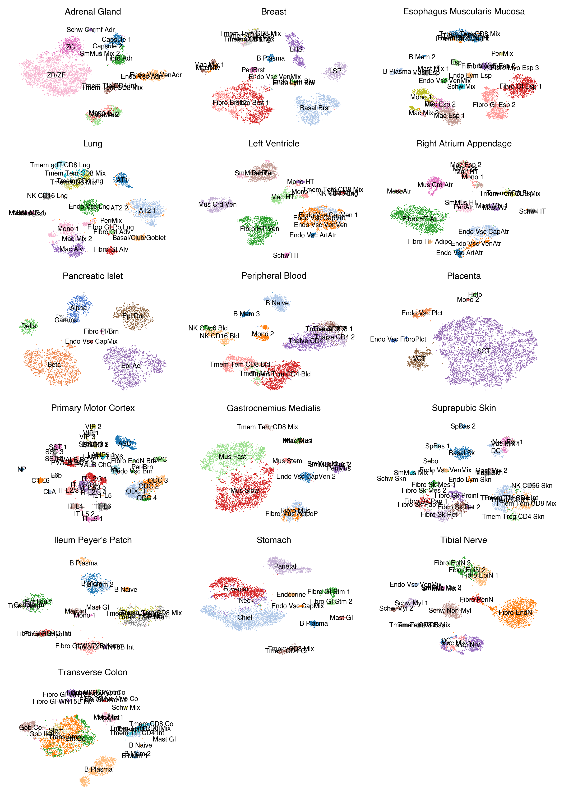
ds = 0.5
coord_base = 'tsne'
meta[['tsne_0', 'tsne_1']] = meta[['Tissue_5kCG_tsne_0','Tissue_5kCG_tsne_1']].copy()
fig, axes = plt.subplots(6, 3, figsize=(7, 10), dpi=300, constrained_layout=True)
for i,xx in enumerate(tissue_meta.index):
tissue_name = tissue_meta.loc[xx, 'tissue_annot']
meta_tmp = meta.loc[meta['Tissue']==xx]
meta_tmp['celltype'] = meta_tmp['subtype'].map(L2_annot).astype(str)
ax = axes.flatten()[i]
count = meta_tmp['celltype'].value_counts()
leg = count.index[count>=30]
selc = meta_tmp['celltype'].isin(leg)
tmp = meta_tmp.loc[selc].copy()
if len(leg)<=10:
palette = 'muted'
else:
palette = 'tab20'
print(xx, len(leg))
_ = categorical_scatter(data=tmp,
ax=ax,
coord_base=coord_base,
hue='celltype',
s=ds,
max_points=None,
palette=palette,
scatter_kws={'rasterized':True},
axis_format='empty',
)
for yy,(x,y) in tmp.groupby('celltype')[['tsne_0', 'tsne_1']].mean().iterrows():
# x, y = np.mean(meta_tmp.loc[meta_tmp['celltype']==yy, ['tsne_0', 'tsne_1']], axis=0)
ax.text(x, y, yy, ha='center', va='center', fontsize=6)
ax.set_title(tissue_name, fontsize=8)
for ax in axes.flatten()[tissue_meta.shape[0]:]:
ax.axis('off')
fig.savefig('clustering_summary/tissue_celltype_mCG.pdf', transparent=True)
AG 14
B 17
EG 23
LG 20
LV 15
RAA 18
PI 8
PBMC 12
P 6
M1C 38
SkGcn 12
Sk 26
SB 18
ST 12
NTb 16
TrCo 23
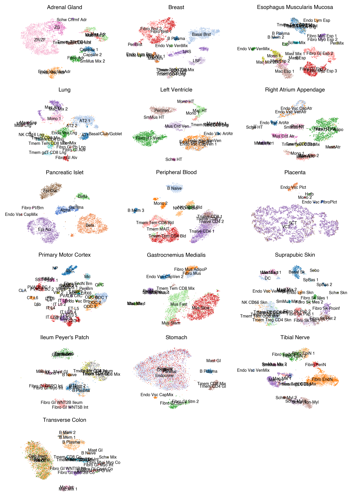
ds = 0.5
coord_base = 'tsne'
meta[['tsne_0', 'tsne_1']] = meta[['Tissue_100k3C_tsne_0','Tissue_100k3C_tsne_1']].copy()
fig, axes = plt.subplots(6, 3, figsize=(7, 10), dpi=300, constrained_layout=True)
for i,xx in enumerate(tissue_meta.index):
tissue_name = tissue_meta.loc[xx, 'tissue_annot']
meta_tmp = meta.loc[meta['Tissue']==xx]
meta_tmp['celltype'] = meta_tmp['subtype'].map(L2_annot).astype(str)
ax = axes.flatten()[i]
count = meta_tmp['celltype'].value_counts()
leg = count.index[count>=30]
selc = meta_tmp['celltype'].isin(leg)
tmp = meta_tmp.loc[selc].copy()
if len(leg)<=10:
palette = 'muted'
else:
palette = 'tab20'
print(xx, len(leg))
_ = categorical_scatter(data=tmp,
ax=ax,
coord_base=coord_base,
hue='celltype',
s=ds,
max_points=None,
palette=palette,
scatter_kws={'rasterized':True},
axis_format='empty',
)
for yy,(x,y) in tmp.groupby('celltype')[['tsne_0', 'tsne_1']].mean().iterrows():
# x, y = np.mean(meta_tmp.loc[meta_tmp['celltype']==yy, ['tsne_0', 'tsne_1']], axis=0)
ax.text(x, y, yy, ha='center', va='center', fontsize=6)
ax.set_title(tissue_name, fontsize=8)
for ax in axes.flatten()[tissue_meta.shape[0]:]:
ax.axis('off')
fig.savefig('clustering_summary/tissue_celltype_HiC.pdf', transparent=True)
AG 14
B 17
EG 23
LG 20
LV 15
RAA 18
PI 8
PBMC 12
P 6
M1C 38
SkGcn 12
Sk 26
SB 18
ST 12
NTb 16
TrCo 23
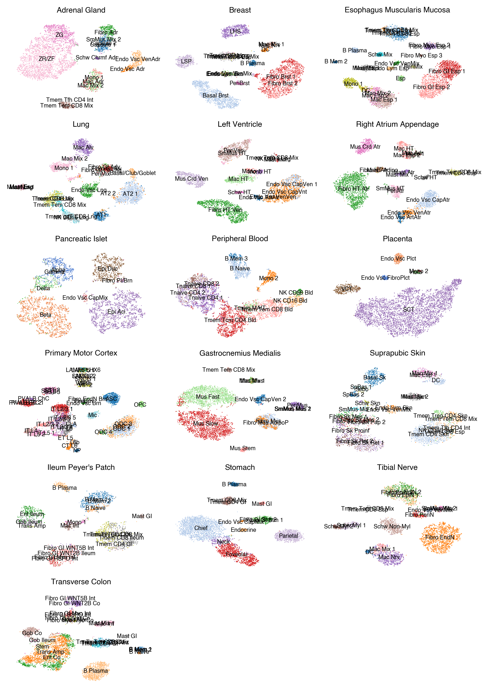
ds = 0.5
coord_base = 'tsne'
meta[['tsne_0', 'tsne_1']] = meta[['L2_joint_tsne_0','L2_joint_tsne_1']].copy()
fig, axes = plt.subplots(7, 5, figsize=(8,8.5), dpi=300, constrained_layout=True)
for i,xx in enumerate(L1_meta.index):
l1_name = L1_meta.loc[xx, 'L1_abbr']
meta_tmp = meta.loc[meta['majortype']==xx]
meta_tmp['celltype'] = meta_tmp['subtype'].map(L2_annot).astype(str)
count = meta_tmp['celltype'].value_counts()
leg = count.index[count>=30]
selc = meta_tmp['celltype'].isin(leg)
tmp = meta_tmp.loc[selc].copy()
if len(leg)<=10:
palette = 'muted'
else:
palette = 'tab20'
print(xx, len(leg))
ds = 20/np.sqrt(meta_tmp.shape[0])
ax = axes.flatten()[i]
_ = categorical_scatter(data=tmp,
ax=ax,
coord_base=coord_base,
hue='celltype',
s=ds,
max_points=None,
palette=palette,
scatter_kws={'rasterized':True},
axis_format='empty',
)
for yy,(x,y) in tmp.groupby('celltype')[['tsne_0', 'tsne_1']].mean().iterrows():
ax.text(x, y, yy, ha='center', va='center', fontsize=6)
ax.set_title(l1_name, fontsize=8)
for ax in axes.flatten():
ax.axis('off')
fig.savefig('clustering_summary/L1_celltype_joint.pdf', transparent=True)
c33 5
c3 15
c22 1
c9 2
c20 4
c25 1
c30 1
c13 4
c8 6
c4 5
c18 7
c2 2
c29 5
c17 2
c19 4
c28 3
c6 13
c11 3
c32 2
c34 4
c23 7
c31 1
c14 5
c7 5
c24 7
c0 17
c27 6
c1 14
c15 4
c26 2
c5 3
c10 14
c16 14
c21 7
c12 11
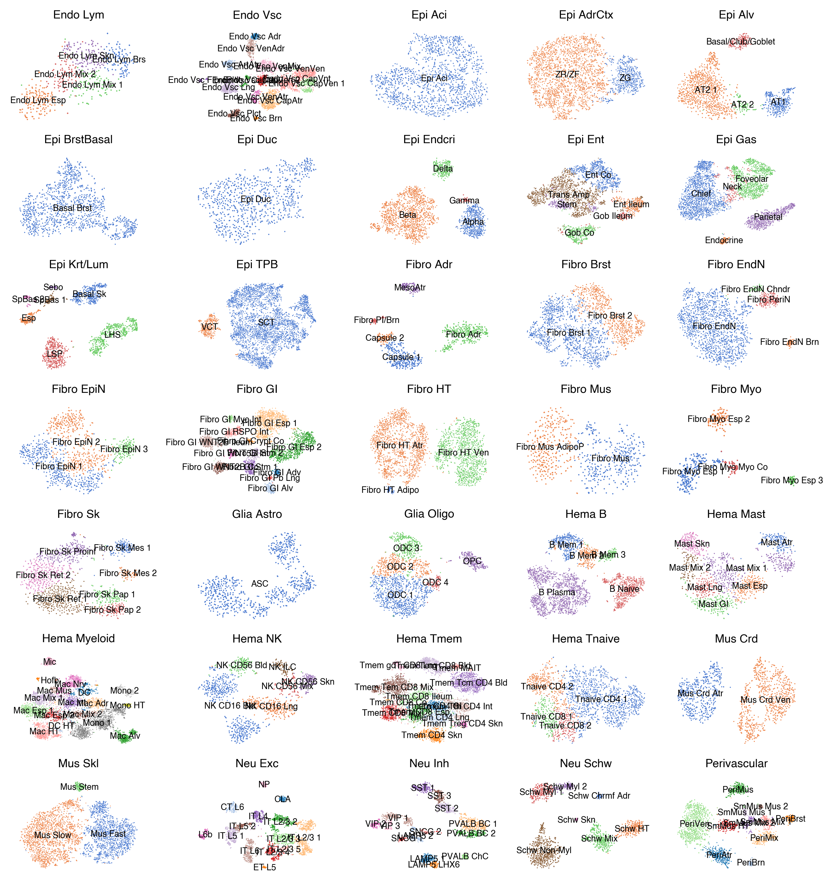
ds = 0.5
coord_base = 'tsne'
meta[['tsne_0', 'tsne_1']] = meta[['L2_5kCG_tsne_0','L2_5kCG_tsne_1']].copy()
fig, axes = plt.subplots(7, 5, figsize=(8,8.5), dpi=300, constrained_layout=True)
for i,xx in enumerate(L1_meta.index):
l1_name = L1_meta.loc[xx, 'L1_abbr']
meta_tmp = meta.loc[meta['majortype']==xx]
meta_tmp['celltype'] = meta_tmp['subtype'].map(L2_annot).astype(str)
count = meta_tmp['celltype'].value_counts()
leg = count.index[count>=30]
selc = meta_tmp['celltype'].isin(leg)
tmp = meta_tmp.loc[selc].copy()
if len(leg)<=10:
palette = 'muted'
else:
palette = 'tab20'
print(xx, len(leg))
ds = 20/np.sqrt(meta_tmp.shape[0])
ax = axes.flatten()[i]
_ = categorical_scatter(data=tmp,
ax=ax,
coord_base=coord_base,
hue='celltype',
s=ds,
max_points=None,
palette=palette,
scatter_kws={'rasterized':True},
axis_format='empty',
)
for yy,(x,y) in tmp.groupby('celltype')[['tsne_0', 'tsne_1']].mean().iterrows():
ax.text(x, y, yy, ha='center', va='center', fontsize=6)
ax.set_title(l1_name, fontsize=8)
for ax in axes.flatten()[L1_meta.shape[0]:]:
ax.axis('off')
fig.savefig('clustering_summary/L1_celltype_mCG.pdf', transparent=True)
c33 5
c3 15
c22 1
c9 2
c20 4
c25 1
c30 1
c13 4
c8 6
c4 5
c18 7
c2 2
c29 5
c17 2
c19 4
c28 3
c6 13
c11 3
c32 2
c34 4
c23 7
c31 1
c14 5
c7 5
c24 7
c0 17
c27 6
c1 14
c15 4
c26 2
c5 3
c10 14
c16 14
c21 7
c12 11
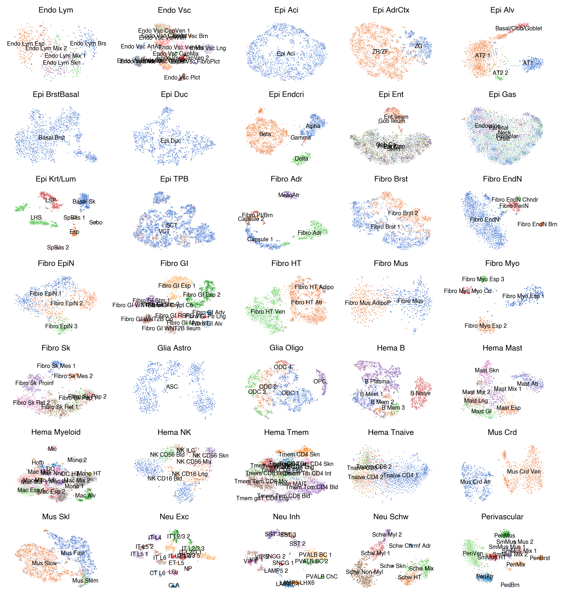
ds = 0.5
coord_base = 'tsne'
meta[['tsne_0', 'tsne_1']] = meta[['L2_100k3C_tsne_0','L2_100k3C_tsne_1']].copy()
fig, axes = plt.subplots(7, 5, figsize=(8,8.5), dpi=300, constrained_layout=True)
for i,xx in enumerate(L1_meta.index):
l1_name = L1_meta.loc[xx, 'L1_abbr']
meta_tmp = meta.loc[meta['majortype']==xx]
meta_tmp['celltype'] = meta_tmp['subtype'].map(L2_annot).astype(str)
count = meta_tmp['celltype'].value_counts()
leg = count.index[count>=30]
selc = meta_tmp['celltype'].isin(leg)
tmp = meta_tmp.loc[selc].copy()
if len(leg)<=10:
palette = 'muted'
else:
palette = 'tab20'
print(xx, len(leg))
ds = 20/np.sqrt(meta_tmp.shape[0])
ax = axes.flatten()[i]
_ = categorical_scatter(data=tmp,
ax=ax,
coord_base=coord_base,
hue='celltype',
s=ds,
max_points=None,
palette=palette,
scatter_kws={'rasterized':True},
axis_format='empty',
)
for yy,(x,y) in tmp.groupby('celltype')[['tsne_0', 'tsne_1']].mean().iterrows():
ax.text(x, y, yy, ha='center', va='center', fontsize=6)
ax.set_title(l1_name, fontsize=8)
for ax in axes.flatten()[L1_meta.shape[0]:]:
ax.axis('off')
fig.savefig('clustering_summary/L1_celltype_HiC.pdf', transparent=True)
c33 5
c3 15
c22 1
c9 2
c20 4
c25 1
c30 1
c13 4
c8 6
c4 5
c18 7
c2 2
c29 5
c17 2
c19 4
c28 3
c6 13
c11 3
c32 2
c34 4
c23 7
c31 1
c14 5
c7 5
c24 7
c0 17
c27 6
c1 14
c15 4
c26 2
c5 3
c10 14
c16 14
c21 7
c12 11
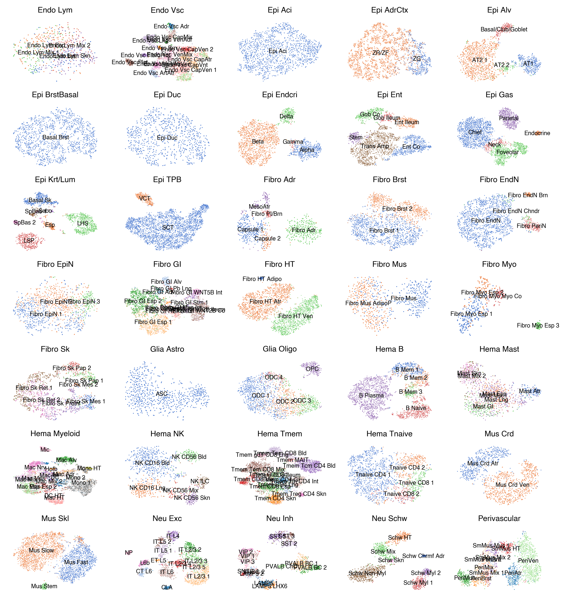